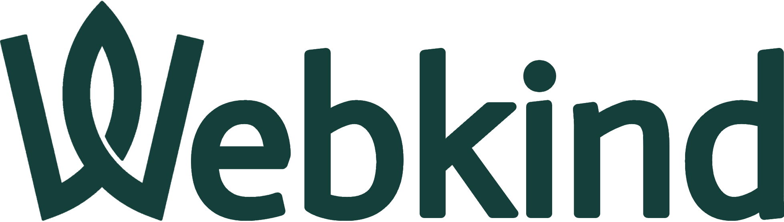

01
LOW · fino a 250 gCO₂/kWh
Esperienza completa
Immagini ad alta risoluzione e interfaccia visuale completa.

Nato da un idea di Piero De Lorenzis durante lo sviluppo di una tesi di laurea.
Tesi di laurea · Ingegneria dell'Informazione
Implementazione delle specifiche di Demand-Responsive Design in React: un'interfaccia capace di ridurre automaticamente dati ed emissioni quando l'energia disponibile è più inquinante.
L'interfaccia reagisce in tempo reale all'intensità carbonica.
Il progetto
Il prototipo reinterpreta la home page dell'Università del Salento e ne modula il peso in base alla carbon intensity della rete elettrica italiana. Quando l'energia ha un impatto maggiore, la pagina carica immagini più leggere o elimina gli elementi grafici non essenziali.
La modalità LIVE usa i dati di Electricity Maps per scegliere automaticamente il livello più adatto. Le modalità manuali permettono invece di osservare e confrontare i tre scenari.
Come funziona
LOW · fino a 250 gCO₂/kWh
Immagini ad alta risoluzione e interfaccia visuale completa.
MEDIUM · 250–400 gCO₂/kWh
Immagini a risoluzione ridotta per limitare i dati trasferiti.
HIGH · oltre 400 gCO₂/kWh
Grafica minima e risorse non necessarie rimosse dalla pagina.
Risultati sperimentali
I test eseguiti con cache svuotata mostrano una riduzione progressiva del peso della pagina e delle emissioni stimate per ogni visualizzazione.
Valori riferiti al modello e alle condizioni illustrate nella tesi.
Approfondisci
La tesi raccoglie il contesto teorico, l'architettura React, la metodologia di test e l'analisi completa dei risultati.